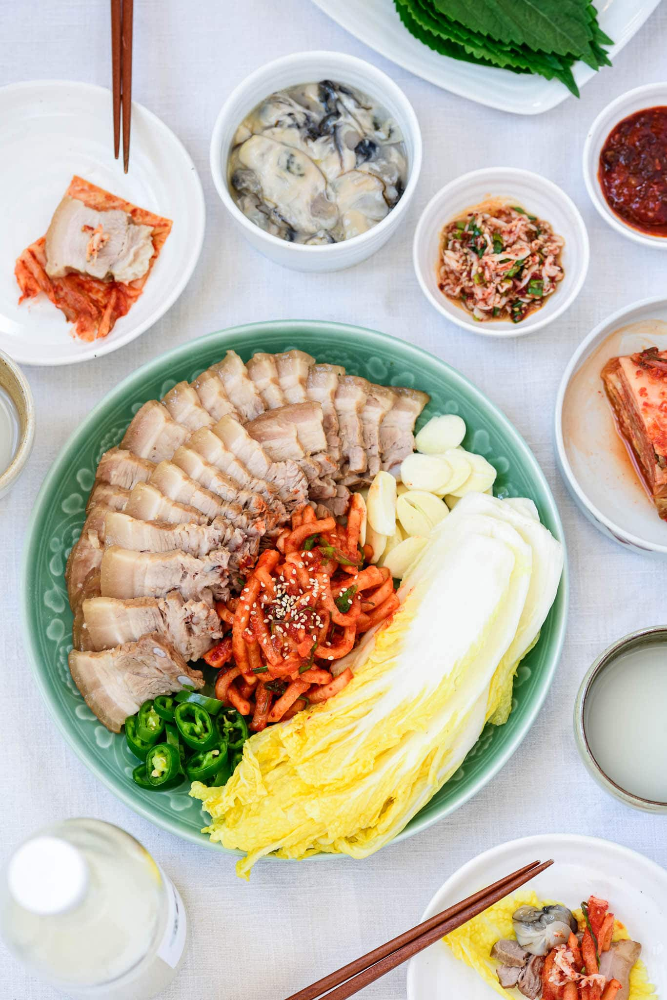

Bossam

Description
Bossam is a boiled pork dish. The meat is boiled in a flavorful brine until tender and served thinly sliced. At the table, each person wraps the meat in salted napa cabbage leaves along with radish salad and salted fermented shrimp. Salted napa cabbage is traditional, but lettuce and/or perilla leaves are also common.
In general, boiled pork is called 'suyuk' in Korean. The name bossam refers to how the meat is enjoyed, i.e., wrapped in a salted cabbage leaf with some condiments such as salted shrimp and/or ssamjang. This way of eating pork started with kimjang, an annual kimchi making event in preparation for cold months.
Ingredients
For wraps:
For brine:
- 2 3-inch wide pork belly cuts(approx. 2.5 pounds)
- 1/2 medium onion
- 2-3 white parts of large scallion
- 7-8 plump garlic cloves
- 1-inch ginger piece, sliced
- 1 tsp whole black pepper
- 1 1/2 tbsp fermented soybean paste
- 1 tsp instant coffee
- 1 tsp salt
- 2 bay leaves
- 7-8 cups water
Steps
Napa cabbage preparation:
- Dissolve 1/2 cup coarse salt in 4 cups water.
- Soak leaves until softened, 2-4 hours.
- Rinse, and drain well. Set aside.
Cooking the pork belly:
- In a pot, bring water and all the brine ingredients to a boil over medium high heat, and continue to boil for 5 minutes.
- Add the pork belly, bring it to a boil. Boil for about 5 minutes, uncovered.
- Reduce the heat to medium, and cook, covered, until the meat is very tender, 45-50 minutes.
- At 40 minute point, cut a small slice and check the tenderness. Cook longer if necessary.
- Turn the heat off, and cool the meat in the cooking liquid. This will keep the meat moist.
- Thinly slice the meat and serve with the salted cabbage, radish salad, and salted fermented shrimp.
Source
Return to Recipes